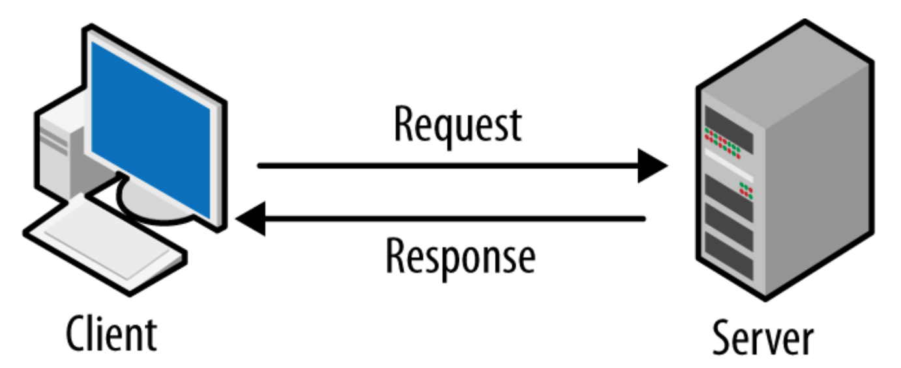

RestAPI Design Best Practices¶

여기서 API는 클라이언트와 서버 간 통신을 원활하게 하는 중요한 역할을 하므로 모범 사례를 따라 잘 설계해야 합니다
잘 디자인 된 webAPI는 다음과 같은 특성을 가집니다 :
- Platform Independenceㅤ: 모든 클라이언트는 내부에서 API가 구현되는 방식에 관계 없이 API를 호출할 수 있다ㅤ: 이를 위해 Standard protocol을 사용해야 하고, 클라이언트 및 웹 서비스가 교환할 데이터 형식에 상호 동의할 수 있는 매커니즘이 있어야 한다
- Service Evolution
ㅤ: Web API는 클라이언트 애플리케이션과 독립적으로 기능을 진화시키고 추가할 수 있어야 한다What is a REST API?¶
Representational State Transfer의 약자로 2000년 Roy Fielding이 제안한 웹서비스를 디자인하는 소프트웨어 아키텍처 접근 방식입니다
RestAPI는 두 컴퓨터가 HTTP 통신시 같은 형식에 맞춰 통신하도록 함으로써 일관성을 부여합니다그렇기에 API는 Restful이라는 REST 디자인 원칙을 잘 따라야 합니다Note
- RESTㅤ: Hypermidia 기반의 분산 시스템을 구축하기 위한 Architectural styleㅤ: 따라서 어떤 기본 프로토콜과도 독립적이며 HTTP에 연결될 필요가 없지만, 대부분의 일반적인 REST API 구현은 HTTP를 애플리케이션 프로토콜로 사용합니다
Resource Oriented Design 세 가지 핵심 개념¶
- Resource : 데이터 조각
User - Collection : Resource 그룹
User list - URL : Resource 또는 Collection 위치 식별
/user
1. Use Json as the Format for Sending and Receiving Data¶
- Client-side에서 Json데이터를 올바르게 해석할 수 있도록 요청하는 동안 Response header에서
Content-type을application/json으로 지정해야한다 - 반대로 다수의 Server-side 프레임워크에서는
Content-type을 자동으로 할당한다 - 이를 통해 Client는 요청이 성공했는지 실패했는지 등의 상황을 파악할 수 있다
2. Use Nouns instead of Verbs in Endpoints¶
- RestAPI를 설계할 때, Endpoint-path에 동사를 사용하지 않는다. 명사를 사용함으로써 endpoint가 무슨 일을 하는지 명시한다
- 이는 CRUD 작업을 설명하기 위한 목적으로 사용된 HTTP Method가 동사 형태이기 때문이다
Good
https://mysite.com/posts
Badhttps://mysite.com/getPostshttps://mysite.com/createPost요약하자면 > Endpoint-path에는 명사를 사용하고, HTTP method를 통해 endpoint의 동작을 정하세요
Common HTTP Methods:
GET: Retrieve dataPOST: Create dataPUT: Update dataDELETE: Get rid of the data
3. Name Collections with Plural Nouns¶
- API data는 사용자로부터 얻어온 다양한 resource의 collection이라 볼 수 있다
- 만약
https://mysite.com/post/123같은 endpoint가 있다면, 사용자가 다른 게시물들이 있음을 알아챌 수 있도록 복수 명사를 사용해야 한다
Good
https://mysite.com/posts/123
Badhttps://mysite.com/post/1234. Use Status Codes in Error Handling¶
- API 요청에 응답할 때는 항상 Regular HTTP Status를 사용한다
- 이를 통해 Client는 요청이 성공했는지 실패했는지 등의 상황을 파악할 수 있다
5. Use Nesting on Endpoints to Show Relationships¶
- Endpoint들은 상호 연결될 수 있다. 이대는 이해하기 쉽도록 중첩해 사용한다
- (Ex) multi-user Blog 플랫폼에서는 여러 게시물이 각기 다른 유저에 의해 작성될 수 있다. 따라서 endpoint를
https://mysite.com/posts/autor처럼 만들면 유효한 중첩이 될 수 있다 - (Ex) 같은 맥락에서 게시물들은 그들만의 독립적인 댓글을 가질 수 있으므로 댓글을 검색하려면
https://mysite.com/posts/postID/comments가 적합하다 - 3단계 이상의 중첩은 도리어 가독성을 저하시키므로 주의해야 한다
Examples :
GET/shops/2/products2번 shop의 모든 제품 리스트 조회GET/shops/2/products/312번 shop의 31번 상품 조회PUT /shops/2/products/312번 shop의 31번 상품 업데이트POST/shops새로운 shop을 생성하고, 생성된 shop의 세부 정보 반환/classes/2/students/15: 2반의 15번 학생/classes/2/students?sex=male: 2반의 남학생들/classes/2/students?page=2&count=10- 관계명이 복잡하다면 이를 서브 리소스에 명시적으로 표현하는 방법도 있다
- 사용자가 '좋아하는' 디바이스 목록 :
/users/{userid}/likes/devices
- 사용자가 '좋아하는' 디바이스 목록 :
6. Use Filtering, Sorting, and Pagination to Retrieve the Data Requested¶
- 가끔 API의 데이터베이스가 너무나 클 때, 데이터를 받아오는 게 많이 느려질 수 있다
- 이때 Filtering, Sorting, Pagination을 통해 필요한 데이터만 걸러내어 해당 request에 대한 서버 부담을 줄일 수 있다
- (Ex)
https://mysite.com/posts?tags=javascriptjavascript tag를 가진 게시물들만 받아온다
7.Use SSL(Secure Socket layer) for Security¶
- SSL을 사용하면 API를 보호하고, 악의적인 공격에 대한 취약성을 줄일 수 있다
- SSL을 적용한 url과 적용하지 않은 url은 HTTPS의 's'에서 그 차이를 볼 수 있다Good
https://mysite.com/postsBadhttp://mysite.com/posts고려해야 할 다른 조치로는 다음 두 항목이 포함됩니다 :
- 서버-클라이언트 간 통신을 비공개로 설정
- API를 사용하는 모든 사용자가 해당 request 외의 정보를 얻지 못하도록 함
8. Be Clear with Versioning¶
- RestAPI는 여러 버전을 지원함으로써 사용자들이 다양한 버전을 사용할 수 있어야 한다
- 최신 버전만 지원하게 되면, 부주의하게 버전을 올릴 시 애플리케이션에 영향이 갈 수 있다
Example:
- Facebook
https://developers.facebook.com/docs/graph-api/reference/v12.0/... - Spotify
https://api.spotify.com/v1/artists/... - Mailchimp
https://mandrillapp.com/api/1.0/...
9. Provide Accurate API Documentation¶
- RestAPI를 제작할 때는 사용자들이 쉽게 배우고, 정확하게 사용할 수 있도록 한다
- 가장 좋은 방법은 API에 대한 좋은 Documentation을 제공하는 것이다
문서는 다음 내용을 포함해야 합니다 :
- Relevant endpoints of the
- Example requests of the endpoints
- Implementation in several programming languages
- Messages listed for different errors with their status codes
API Design Tool and API Documentation Tool:
- Swagger
- API Blueprint
- Postman
10. Use kebab-case for URLs¶
- kebab-case: 각 단어를 dash "-"로 구분하는 naming 규칙
Good
/system-orders
Bad/systemOrders/system_orders11. Use camelCase for parameters¶
- camelCase : 첫번째 단어의 첫 글자는 소문자, 뒤따르는 각 단어의 첫 글자는 대문자로 표시하는 naming 규칙
Good
/system-orders/{orderId}
Bad/system-orders/{order_id}/system-orders/{OrderId}12. Use camelCase for JSON property¶
- Request 또는 Response의 json 속성은 camelCase로 작성
Good
{userName: “example” userID: “1”}
Bad{user_name: “example” user_id “1”}13. URL Starts With a Collection and Ends With an Identifier¶
- URL은 collection으로 시작하고, Identifier로 끝낸다
Good
GET /shops/:shopId/GET /category/:categoryId
Bad/shops/:shopId/category/:categoryId/price14. Use verbs for Non-Resource URL¶
- 작업 반환의 역할만 하는 Endpoint의 경우 동사를 사용하기도 한다
- (Ex) 사용자에게 경고를 다시 보내려는 경우
POST /alerts/245743/resendurl은 CRUD 작업이 아닌 시스템에서 특정 작업을 수행하는 기능으로 간주된다
15. Monitoring¶
RESTful HTTP 서비스는
/health/version/metricsAPI endpoint를 구현해야 한다/heatlh:/heatlh요청에 대해200Status code로 응답/version:/version요청에 대해 버전 번호로 응답/metrics:/metrics요청에 대해 평균 응답 시간과 같은 다양한 metric 제공
16. Don't Use table_name for the Resource Name¶
17. Include Total Number of Resources in Your Response¶
- API가 Object_List를 반환하는 경우, 항상 Response에 resource의 총 개수를 포함한다
- 이를 위해 total 속성을 사용할 수 있다
18. Accept limit and offset Parameters¶
- GET 작업에서는 항상
limit,offset파라미터를 받는다 - Frontend에서의 Pagenation에 필요하다
Good
GET /shops?offset=5&limit=519. Don't Pass Authentication Tokens in URL¶
- URL에 Authentication token을 포함하지 마세요.
- URL은 종종 기록되기 때문에 인증 토큰도 불필요하게 기록되므로 좋지 않은 방법이다
- URL 대신 Header와 함께 전달한다
Good
Authorization: Bearer xxxxxx, Extra yyyyy
BadGET /shops/123?token=some_kind_of_authentication_token20. Validate the Content-Type¶
- 서버는 Content-type을 확신해서는 안된다
- (Ex)
application/x-www-form-unrlencoded에 대해 수락한다면, 공격자는 양식을 만들고 간단한 POST 요청을 통해 트리거를 작동할 수 있다
21. CORS¶
- 모든 공개 API에 대해 CORS(Cross-Origin Resource Sharing) Header 지원
- CORS 허용 출처 "*" 지원 및 유효한 OAuth token을 통한 권한 부여 고려
22. Golden Rules¶
API 디자인에 확신이 서지 않는 경우, 올바른 결정에 도움을 줄 수 있는 사항들 :
- Flat > nested
- 단순함 > 복잡함
- 문자열 > 숫자
- 일관성 > 사용자 정의
23. 파일 확장자는 URI에 포함하지 않는다¶
대신 Accept 헤더를 사용한다
Good
GET /members/soccer/345/photo HTTP/1.1 Host: restapi.example.com Accept: image/jpg
Badhttp://restapi.example.com/members/soccer/345/photo.jpg
Quote
- Naming Case
- freecodecamp -- (번역)freecodecamp
- 22-Best-Practice
- Image• 1: madooei
- 김정현 강사님
- Resource : 데이터 조각
- Service Evolution